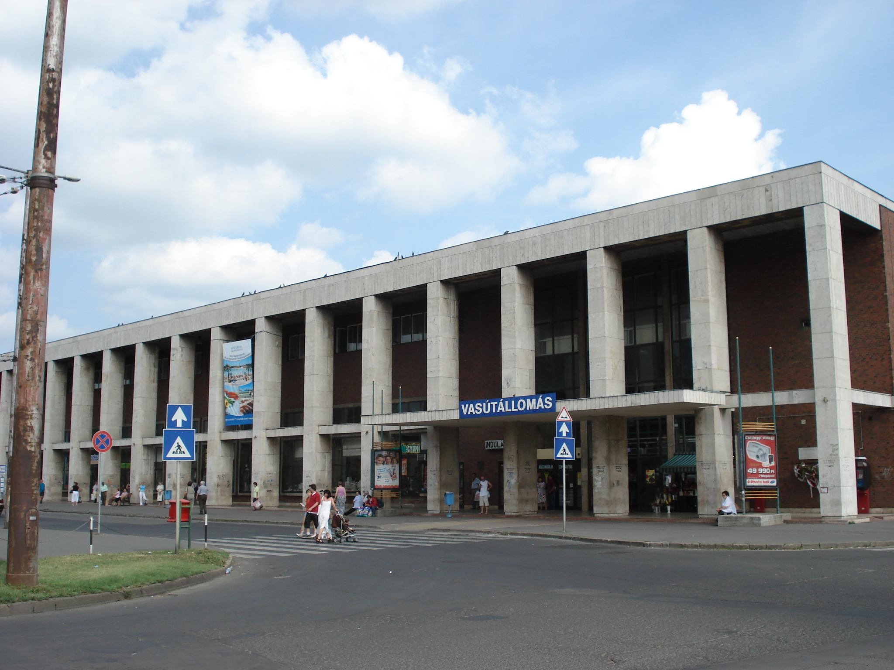

Még a megérkezésünk napján körbenéztünk a fővárosban, megnéztük a Parlamentet, a Dunát és voltunk vacsorázni

A kirándulás az úgy kezdődött, hogy a Debreceni Nagyállomáson belül gyülekeztünk és a 8:35-ős vonattal eindultunk Budapestre
Megérkeztünk Budapestre ahol a megvettük a csoportos jegyünket a belvárosi tömegközlekedésre és elindultunk a szállásunk felé.
A szállásunk a Margit-szigeten volt és kifejezetten jól éreztük ott magunkat.
Még a megérkezésünk napján körbenéztünk a fővárosban, megnéztük a Parlamentet, a Dunát és voltunk vacsorázni
A második napom elmentünk megnézi a Magyar Természettudományi Múzeumot és onnan elmentünk ebédelni egy pékségbe

Majd pedig mindennek a lezárására a Nyugati pályaudvarról indultunk vissza Debrecenbe 15:23-kor